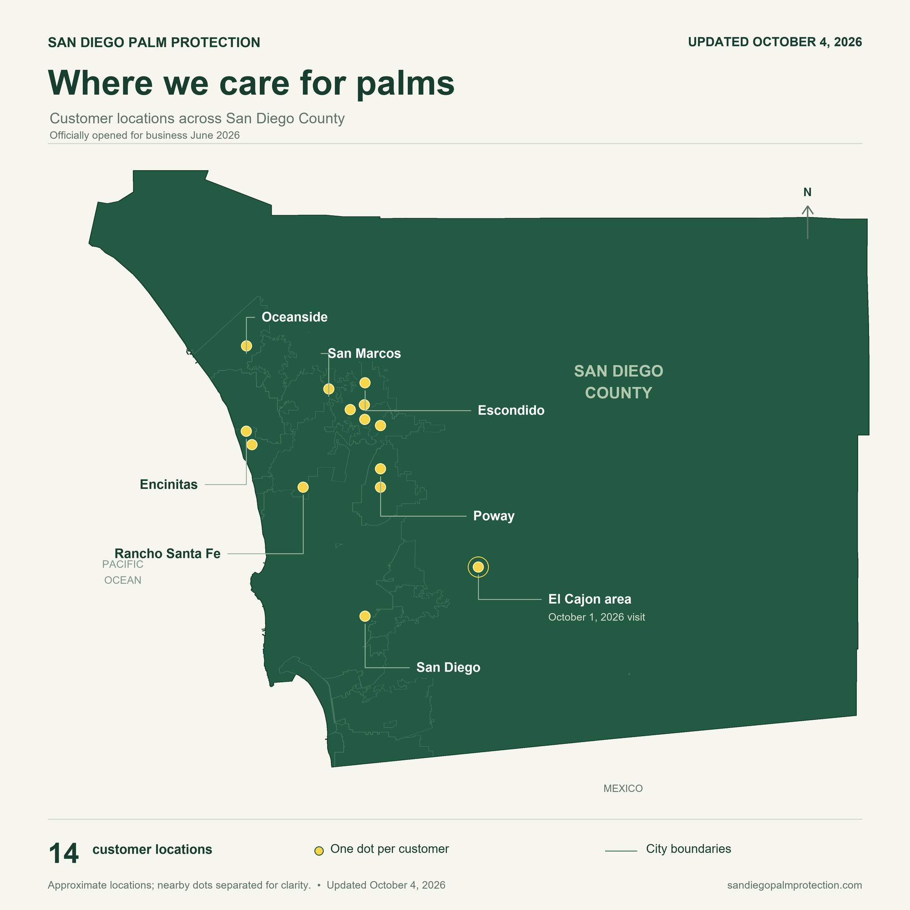

Where we treat for palm weevil
San Diego County


Protection starts before visible decline
South American palm weevil is a real problem here in San Diego County, especially for mature Canary Island date palms. The larvae feed inside the palm, including the growing point in the crown. Serious damage can develop before an owner notices a change from the ground. UC IPM explains why infestations can be overlooked until palms are irrecoverably damaged.
That is why I consider early assessment and appropriate preventive treatment critical parts of protecting a susceptible, valuable palm. Do not wait for the crown to thin or collapse before having that conversation. A green canopy alone does not tell us what is happening inside.
I start by looking at the whole palm and its crown, documenting its condition, and discussing a plan that fits the species, site, and local pressure. Preventive treatment, when appropriate, works alongside monitoring and follow-up care. Product choice and timing must follow the label and site requirements; no treatment guarantees survival.
If you have a mature palm you want to protect, request a palm assessment. I would rather help you plan while the crown still looks good than meet for the first time after a major change.
Map boundaries: SanGIS municipal boundaries and County of San Diego. Location placement uses Esri geocoding.